1 . fejezet A LOESS simító
A LOESS simítóról lesz szó
Ehhez az anyaghoz egyedül a ggplot2 könyvtárra lesz szükségünk (illetve beállítjuk a véletlenszám-generátor seed-jét a reprodukálhatóság kedvéért):
1.1 Motiváció
Első lépésben előkészítünk egy demonstrációs adatbázist. Szimulált adatokat fogunk használni (zajos szinusz), így mi is tudni fogjuk, hogy mi az igazság
, a valódi függvény amiből a pontok jöttek:
n <- 101
x <- (1:n) + rnorm(n, 0, 0.1)
y <- sin(x/n*(2*pi))
yobs <- y + rnorm(n, 0, 0.2)
SimData <- data.frame(x, y, yobs)
p <- ggplot(SimData, aes(x = x, y = yobs)) + geom_point() +
geom_line(aes(y = y), color = "orange", lwd = 1)
pParaméteres görbeillesztésnél fel kell tételeznünk egy függvényformát (ti. ami a pontok mögött van a valóságban). Például, hogy lineáris:
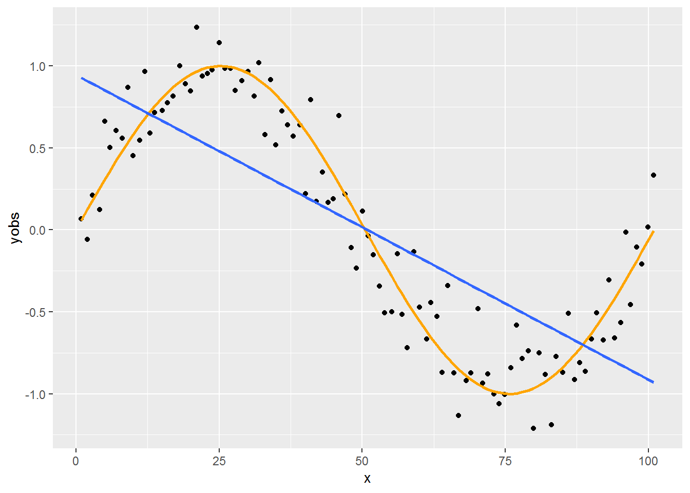
Ez az ábra jól mutatja ennek a fő problémáját: hogy ezt a feltételezést el is ronthatjuk! Természetesen vannak diagnosztikai eszközök ennek felderítésére, és ez alapján kereshetünk jobb függvényformát, de gyökerestül csak az oldja meg a problémát, ha olyan módszert találnánk, ami a nélkül működik, hogy egyáltalán fel kelljen tételeznie (bármilyen) függvényformát. Ezt oldják meg a simítási eljárások. (Lényegében nemparaméteres regresszióról van szó.)
Annak az előnynek, hogy nem kell ilyen feltételezéssel élnünk (és így azt el sem ronthatjuk), természetesen ára van: kevésbé hatásosan becsülhető, mint a paraméteres illesztés, nincsenek számszerű paramétereink (aminek esetleg tárgyterületi interpretációt lehet adni), csak ábrát tudunk rajzolni
, és végezetül extrapoláció sem lehetséges, legalábbis nem triviálisan.
1.2 A LOESS simító alapgondolata
Az egyik legnépszerűbb megoldás a LOESS (locally weighted scatterplot smoothing, néha LOWESS, vagy Savitzky–Golay szűrő), melynek alapgondolata, hogy végigmegy az \(x\)-változó releváns tartományán, és minden értékre meghatározza a pontfelhő ottani, tehát lokális közelítését, egy polinomális regresszióból. Utána az egész simítást ezekből a darabkákból építi fel.
Legyen például a vizsgált érték a \(23.5\):
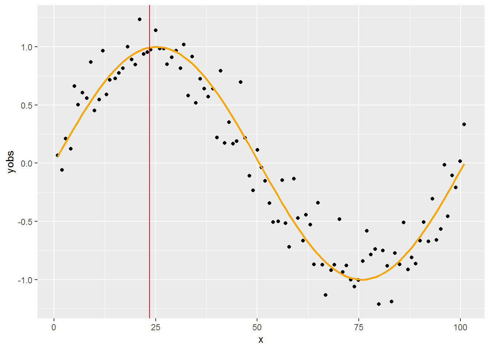
1.3 Lokalitás
A lokalitást két eszközzel érjük el. Az egyik, hogy nem használjuk az összes pontot, csak a vizsgált értékhez legközelebb eső \(\alpha\) hányadát (ha ez nem egész lenne, akkor felső egészrészt veszünk); ezt a paramétert szokták span-nek nevezni. Például, ha ez 75%, akkor a távolság ameddig figyelembe vesszük a pontokat:
## [1] 75.75## [1] 76## [1] 0.3010648 0.4925435 1.4217864 1.5619826 2.4081023 2.4943871 3.4406099 3.4844204 4.3529248 4.4178779 5.4056164 5.4521850
## [13] 6.5016190 6.5417942 7.5044934 7.6358680 8.3875069 8.4897212 9.5387672 9.7214700 10.4946195 10.5621241 11.3622940 11.4610157
## [25] 12.3488219 12.4585005 13.4605710 13.5305388 14.4424219 14.4940687 15.4261675 15.6100025 16.4512571 16.5763176 17.4835476 17.5820468
## [37] 18.4670492 18.4746638 19.3404719 19.5696963 20.5556663 20.5835629 21.4311244 21.4816357 22.4292505 22.5626454 23.5364582 24.5768533
## [49] 25.4887654 26.5881108 27.5398106 28.4387974 29.5341120 30.3870637 31.6433024 32.6980400 33.4632779 34.3955865 35.5569720 36.4864945
## [61] 37.7401618 38.4960760 39.5689739 40.5028002 41.4256727 42.5188792 43.3195041 44.6465555 45.5153253 46.7172612 47.5475510 48.4290054
## [73] 49.5610726 50.4065902 51.3746367 52.5291446 53.4556708 54.5001105 55.5074341 56.4410479 57.4431331 58.4864821 59.6178087 60.3476433
## [85] 61.5593946 62.5332950 63.6063100 64.4695816 65.5370019 66.5267099 67.4457480 68.6207868 69.6160403 70.5700214 71.6586833 72.5558486
## [97] 73.3723408 74.4426735 75.3775387 76.4526599 77.4379633## [1] 52.52914A másik eszköz, hogy még a megtartott pontokon belül is súlyozunk: minél távolabb esik egy pont a vizsgált értéktől annál kisebb lesz a súlya. Általában a trikubikus súlyfüggvényt használjuk:
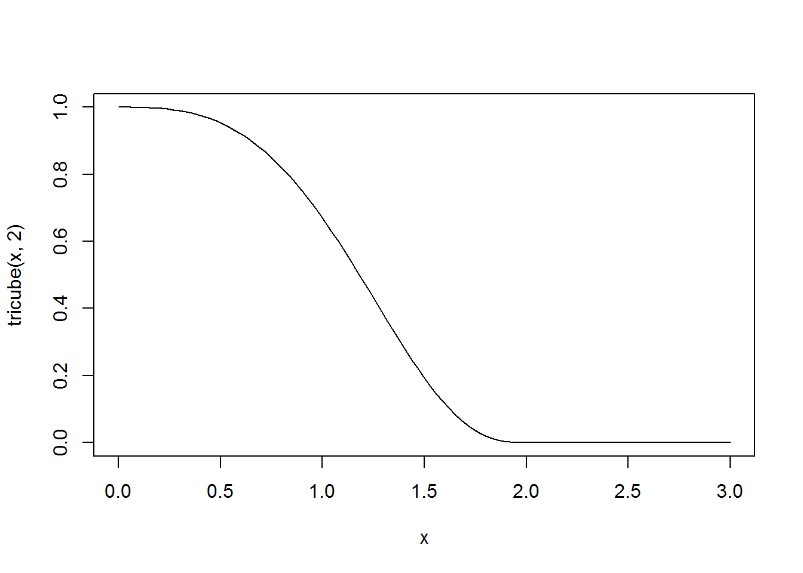
(A fenti definícióval természetesen a kétféle lépés együtt van benne a tricube függvényben.)
A felhasznált pontok:
SimData$w <- tricube(abs(x-23.5), sort(abs(x-23.5))[ceiling(n*span)])
ggplot(SimData, aes(x = x, y = yobs, color = w>0)) + geom_point()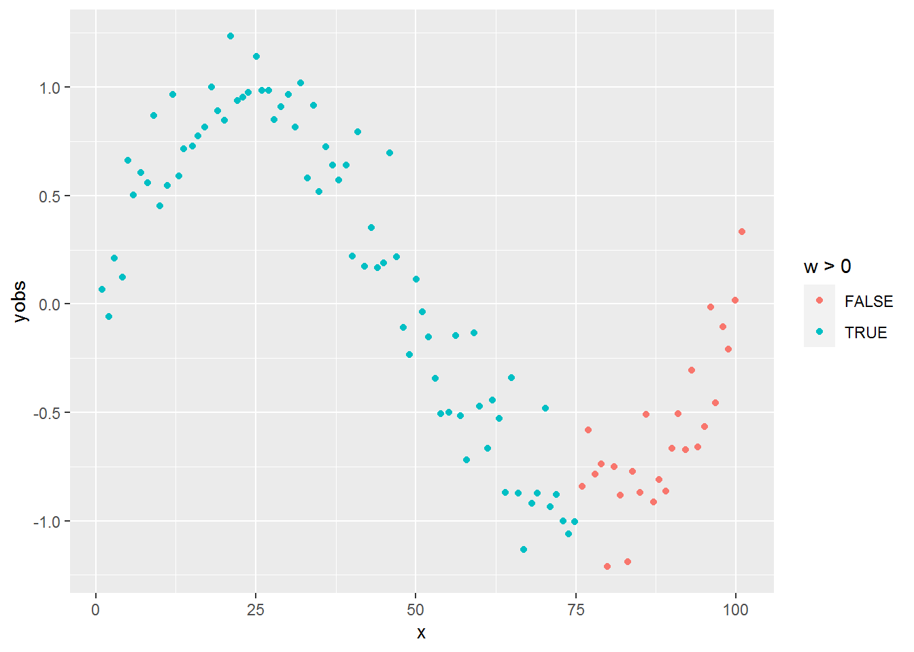
A súlyozás:
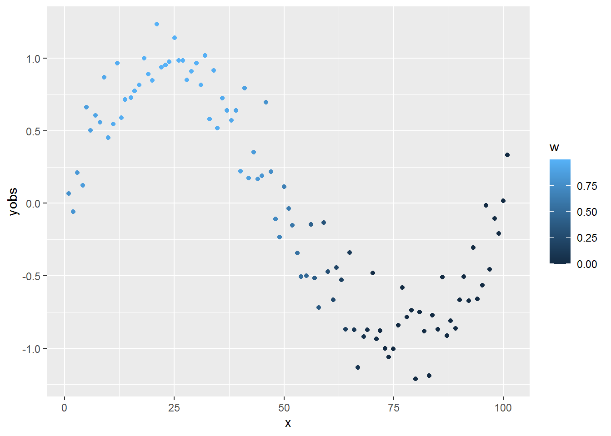
1.4 Polinomiális regresszió
A leszűkített és átsúlyozott ponthalmazra – ezt most tehát egyben tartalmazza a w – egy polinomális regressziót illesztünk.
Legegyszerűbb esetben ez lineáris regresszió:
fit <- lm(yobs ~ x, weights = w, data = SimData)
p + geom_vline(xintercept = 23.5, color = "red") +
geom_abline(intercept = coef(fit)[1], slope = coef(fit)[2])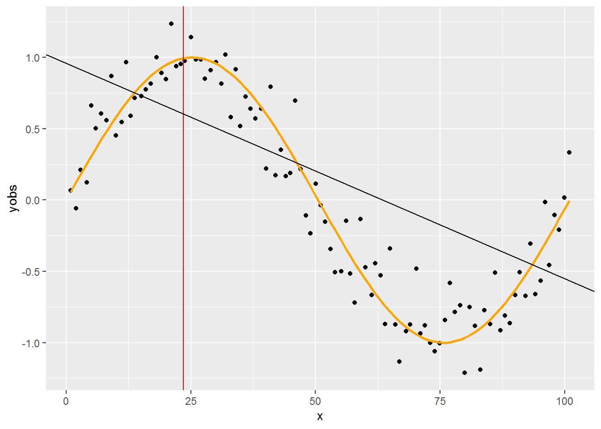
Az illesztett regressziónak azt a pontját vesszük ki, ami a vizsgált érték volt! Az előbbi példát folytatva:
p + geom_abline(intercept = coef(fit)[1], slope = coef(fit)[2]) +
geom_vline(xintercept = 23.5, color = "red") +
geom_point(x = 23.5, y = predict(fit, data.frame(x = 23.5)), color="red")
A dolgot automatizálhatjuk is:
loessfun <- function(xin, x, yobs, span) {
n <- length(x)
w <- tricube(abs(x-xin), sort(abs(x-xin))[ceiling(n*span)])
fit <- lm(yobs ~ x, weights = w)
predict(fit, data.frame(x = xin))
}
p + geom_vline(xintercept = 23.5, color = "red") +
geom_point(x = 23.5, y = loessfun(23.5, SimData$x, SimData$yobs, 0.75), color="red")Ezt használva természetesen kényelmesen kiszámíthatjuk ezt bármely más értékre is:
p + geom_vline(xintercept = 48.3, color = "red") +
geom_point(x = 48.3, y = loessfun(48.3, SimData$x, SimData$yobs, 0.75), color="red")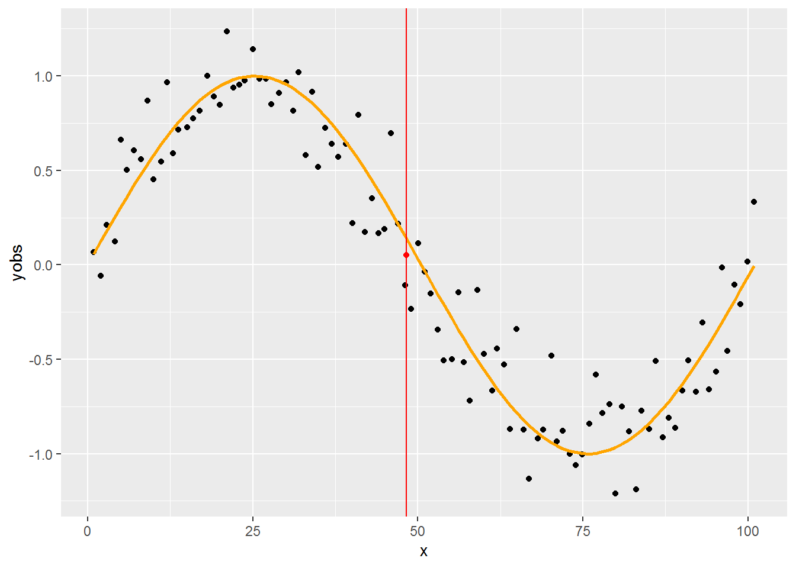
p + geom_vline(xintercept = 91.2, color = "red") +
geom_point(x = 91.2, y = loessfun(91.2, SimData$x, SimData$yobs, 0.75), color="red")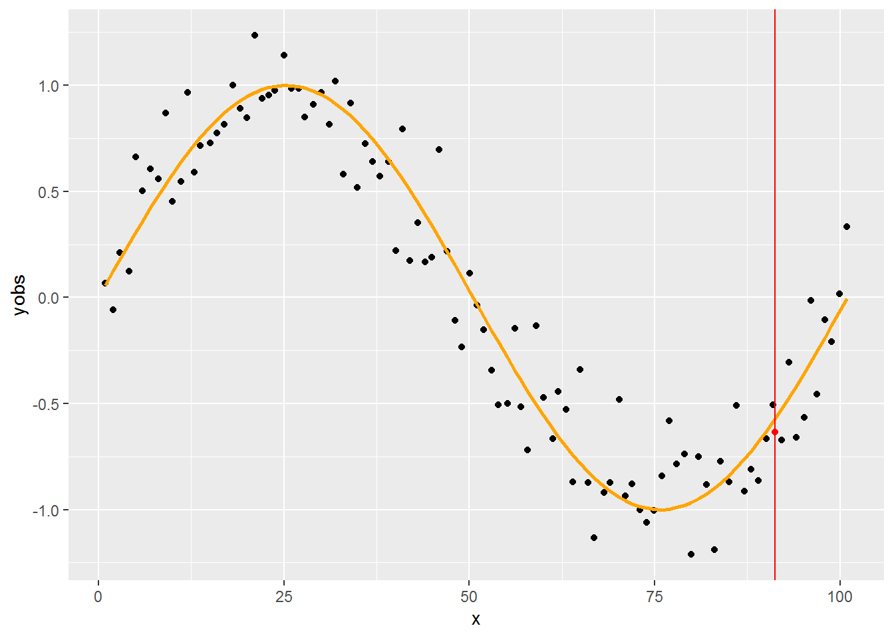
1.5 Összerakva az építőelemeket: lokális polinomiális regressziókkal közelítés
Innen már értelemszerű a következő lépés, számítsuk ki ezeket a simított értékeket az \(x\) releváns tartományának minden pontjára:
SmoothData <- expand.grid(grid = seq(0, 101, 0.1))
SmoothData$value <- apply(SmoothData, 1, function(x)
loessfun(x["grid"], SimData$x, SimData$yobs, 0.75))
p + geom_line(data = SmoothData, aes(x = grid, y = value), color = "red")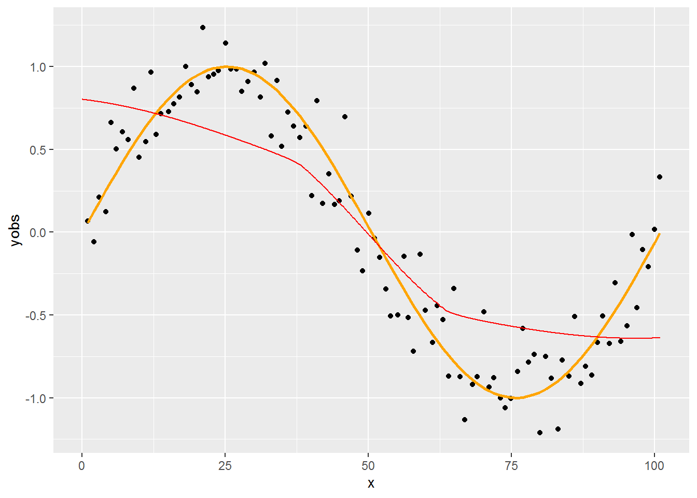
Ez lesz a LOESS simítás!
Min múlott az eredmény? Két paramétert használtunk: azt, hogy a pontok mekkora hányadát tartjuk meg, és azt, hogy hányadfokú polinomot illesztettünk. A fenti példában ezek \(\alpha=0,\!75\) és \(p=1\). (Természetesen a súlyozófüggvény a harmadik paraméter, de azt most végig rögzítettnek fogjuk tekinteni.)
1.6 A paraméterek megválasztásának hatása: lokalitás
Kézenfekvő a kérdés, hogy vajon a simításra hogyan hatnak ezek a paraméterek (annál is inkább, mert a fenti simítás nem néz ki túl bíztatóan!). Kezdjük a lokalitást szabályzó \(\alpha\) paraméter hatásával:
SmoothData <- expand.grid(grid = seq(0, 101, 0.1),
span = c(2/n+1e-10, 0.25, 0.5, 0.75, 1))
SmoothData$value <- apply(SmoothData, 1, function(x)
loessfun(x["grid"], SimData$x, SimData$yobs, x["span"]))
SmoothData$span <- as.factor(SmoothData$span)
p + geom_line(data = SmoothData[SmoothData$span%in%c(0.25, 0.5, 0.75), ],
aes(x = grid, y = value, color = span))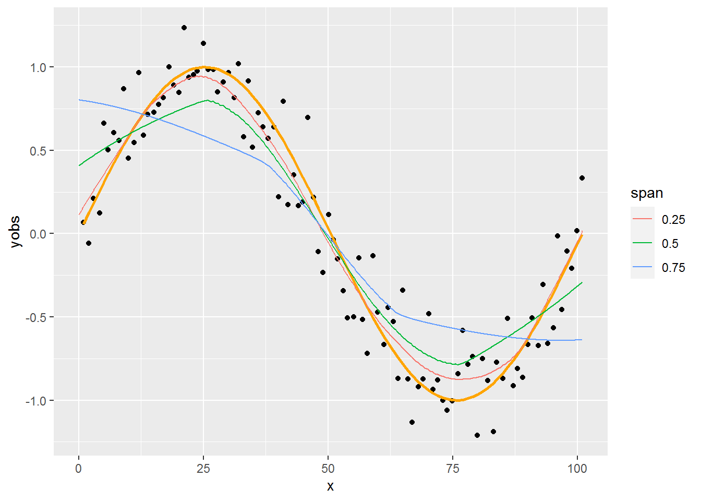
Még szemléletesebb, ha megnézzük a két szélső értéket is. Ha minden pontot figyelembe veszünk (nincs lokalitás):
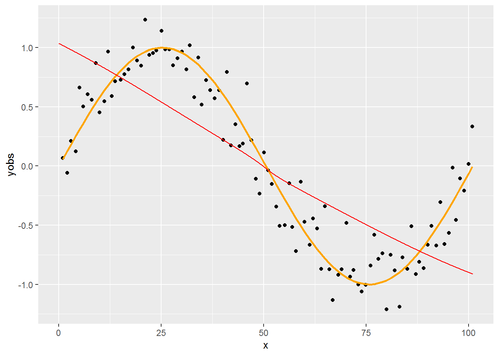
Ha semennyi pontot nem veszünk figyelembe, a legközelebbi kettő kivételével értelemszerűen, hogy legyen mire illeszteni a görbét (teljes lokalitás):
p + geom_line(data = SmoothData[SmoothData$span==2/n+1e-10, ], aes(x = grid, y = value),
color = "red")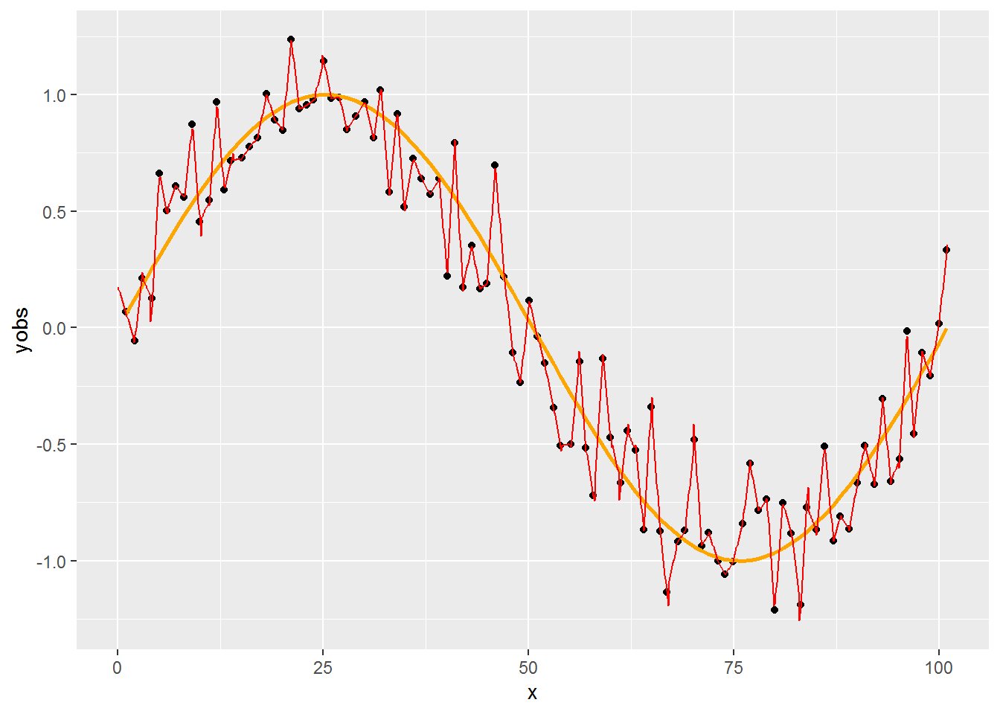
Az első esetet szokták úgy hívni, hogy túlsimítás, a másodikat úgy, hogy alulsimítás. Vajon hogyan tudjuk a simítási paraméter (ennél a módszernél az \(\alpha\)) értékét optimálisan megválasztani?
1.7 A paraméterek megválasztásának hatása: a polinom fokszáma
Mielőtt az előbbi kérdésre válaszolunk, meg kell nézni még egy kérdést, mert vissza fog hatni a válaszra: az illesztett polinom \(p\) fokszámát. Vajon mi történik, ha lineáris regresszió helyett magasabb fokszámú polinomot használunk?
1.7.1 Kitérő: polinomiális regresszió illesztésének szintaktikája R alatt
Érdemes kitérni arra a kérdésre, hogy a polinomiális regressziót hogyan kell R alatt specifikálni (az lm-nek megadni).
A dolognak van ugyanis egy szintaktikai trükkje. Az ugyanis, ami a legkézenfekvőbbnek tűnne, nem működik:
##
## Call:
## lm(formula = y ~ x + x^2, data = SimData)
##
## Coefficients:
## (Intercept) x
## 0.96485 -0.01892A probléma oka, hogy az lm formula interfészében a műveleti jelek speciálisan viselkednek. A ^ nem a hatványozás jele, hanem interakciót specifikál, azaz az (x+y)^2 ugyanaz mint az x+y+x:y, viszont egy tagnál nincs mivel interakciót képezni, így az x^2 ugyanaz lesz mint az x.
A megoldást az I() függvény jelenti, ami azt mondja az R-nek, hogy a beleírt kifejezésben szereplő operátorokat a szokásos aritmetikai értelemmel értékelje ki:
##
## Call:
## lm(formula = y ~ x + I(x^2), data = SimData)
##
## Coefficients:
## (Intercept) x I(x^2)
## 1.014e+00 -2.178e-02 2.806e-05Ez már működik, de eljárhatunk egyszerűbben is, a poly függvény ugyanis pont erre szolgál:
##
## Call:
## lm(formula = y ~ poly(x, 2), data = SimData)
##
## Coefficients:
## (Intercept) poly(x, 2)1 poly(x, 2)2
## -0.0001279 -5.5423654 0.2142741Látszólag mást kaptunk, de valójában csak a parametrizálásban van eltérés, a predikciók azonosak:
## 1
## 0.1119441## 1
## 0.1119441A magyarázat, hogy a poly alapjáraton ortogonalizálja a tagokat (azaz olyan másodfokú polinomot szolgáltat, melynek elemei korrelálatlanok egymással). Nézzük is meg, a kapott vektorok csakugyan ortogonálisak, sőt, sortonormáltak, egymásra és a csupa \(1\) vektorra nézve:
## 1 2 3
## 1.010000e+02 2.498002e-16 2.720046e-15 -2.775558e-17
## 1 2.498002e-16 1.000000e+00 -2.706169e-16 -5.551115e-17
## 2 2.720046e-15 -2.706169e-16 1.000000e+00 -1.457168e-16
## 3 -2.775558e-17 -5.551115e-17 -1.457168e-16 1.000000e+00Ha szeretnénk, ezt kikapcsolhatjuk, és akkor visszakapjuk a kézel létrehozott eredményt:
##
## Call:
## lm(formula = y ~ poly(x, 2, raw = TRUE), data = SimData)
##
## Coefficients:
## (Intercept) poly(x, 2, raw = TRUE)1 poly(x, 2, raw = TRUE)2
## 1.014e+00 -2.178e-02 2.806e-05Az alapértelmezett persze nem véletlenül az, ami: az ortogonális polinomok becslése sokkal jobb numerikus szempontból. Például a modellmátrix kondíciószámát nézve:
## [1] 10.04988## [1] 1651776A poly használata nem csak elegánsabb és numerikusan szerencsésebb, de jóval kényelmesebb is (gondoljunk bele mi volna, ha véletlenül tizedfokú polinomot akarnánk specifikálni, vagy változó lenne, hogy hányadfokú polinomról van szó).
1.7.2 Polinom fokszámának változtatása
Most már könnyedén megoldhatjuk, hogy a fokszám is változtatható legyen:
loessfun <- function(xin, x, yobs, span, degree) {
n <- length(x)
w <- tricube(abs(x-xin), sort(abs(x-xin))[ceiling(n*span)])
fit <- lm(yobs ~ poly(x, degree), weights = w)
predict(fit, data.frame(x = xin))
}Ezt használva immár különböző fokszámokkal és simítási paraméterrel is próbálkozhatunk:
SmoothData <- rbind(expand.grid(grid = seq(0, 101, 0.1),
span = c(2/n+1e-10, 0.25, 0.5, 0.75, 1), degree = 1),
expand.grid(grid = seq(0, 101, 0.1),
span = c(3/n+1e-10, 0.25, 0.5, 0.75, 1), degree = 2))
SmoothData$value <- apply(SmoothData, 1, function(x)
loessfun(x["grid"], SimData$x, SimData$yobs, x["span"], x["degree"]))
SmoothData$span <- as.factor(SmoothData$span)
p + geom_line(data = SmoothData[SmoothData$span%in%c(0.25, 0.5, 0.75), ],
aes(x = grid, y = value, color = span)) + facet_grid(rows = vars(degree))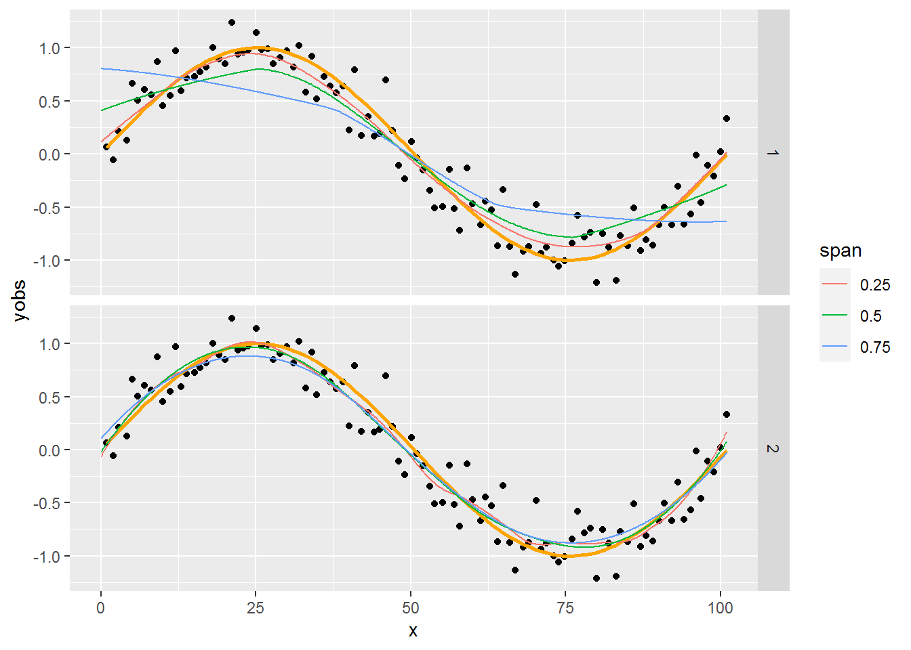
Egy nagyon fontos dolgot látunk: ha áttérünk a másodfokú polinom használatára, akkor gyakorlatilag a simítási paramétertől függetlenül szinte tökéletes simítást kapunk!
1.8 A paraméterek megválasztása
Adja magát a kérdés, hogy a paramétereket hogyan választhatjuk meg egy valódi helyzetben (értsd: ahol mi sem tudjuk mi az igazi függvény).
Itt most csak az érzékeltetés kedvéért mutatunk meg egy nagyon egyszerű módszert (megjegyezve, hogy ennél okosabban is el lehet járni, de ez is szemléltetni fogja, hogy a probléma kezelhető).
Amit meg fogunk nézni az lényegében egy hold-out set validáció. A simitás jóságát azzal fogjuk mérni, hogy a simítógörbe és a pontok között mekkora a négyzetes eltérésösszeg. Ennek minimalizálása természetesen mindig alulsimított megoldást eredményezne, hiszen ez a célfüggvény nullába is vihető. Éppen ezért cselesebben járunk el: a pontokat véletlenszerűen két részre osztjuk, az egyik alapján határozzuk meg a simítógörbét (tanítóhalmaz), de a hibát a másik halmazon (teszthalmaz) mérjük le! Így ha elkezdünk túlsimítani, akkor a tanítóhalmazon ugyan csökken a hiba, de a teszthalmazon elkezd nőni. Azt a simítást választjuk tehát, ami a teszthalmazon mért hibát minimalizálja.
SimData$train <- FALSE
SimData$train[sample(1:101, 80)] <- TRUE
ggplot(SimData, aes(x = x, y = yobs, color = train)) + geom_point() +
geom_line(aes(y = y), color = "orange", lwd = 1)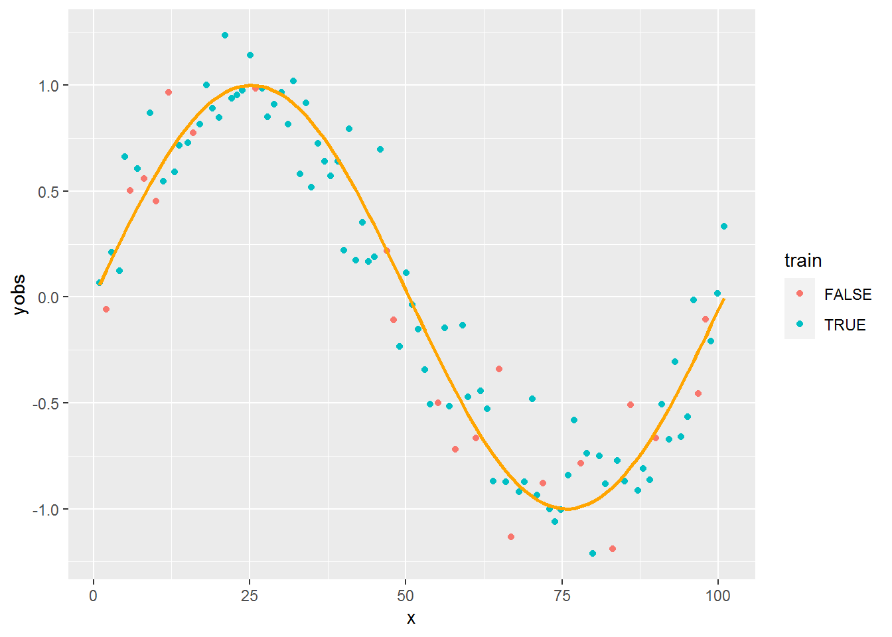
Nézzük meg hogyan alakul a hiba a simítási paraméter változtatásával, ha az összes pontra illesztünk (az egyszerűség kedvéért a fokszám legyen fixen 1):
spans <- seq(0.03, 0.99, 0.01)
SSEfull <- sapply(spans, function(sp) sum((sapply(1:101, function(i)
loessfun(SimData$x[i], SimData$x, SimData$yobs, sp, 1))-yobs)^2))
ggplot(data.frame(span = spans, SSE = SSEfull), aes(x = span, y = SSE)) + geom_line()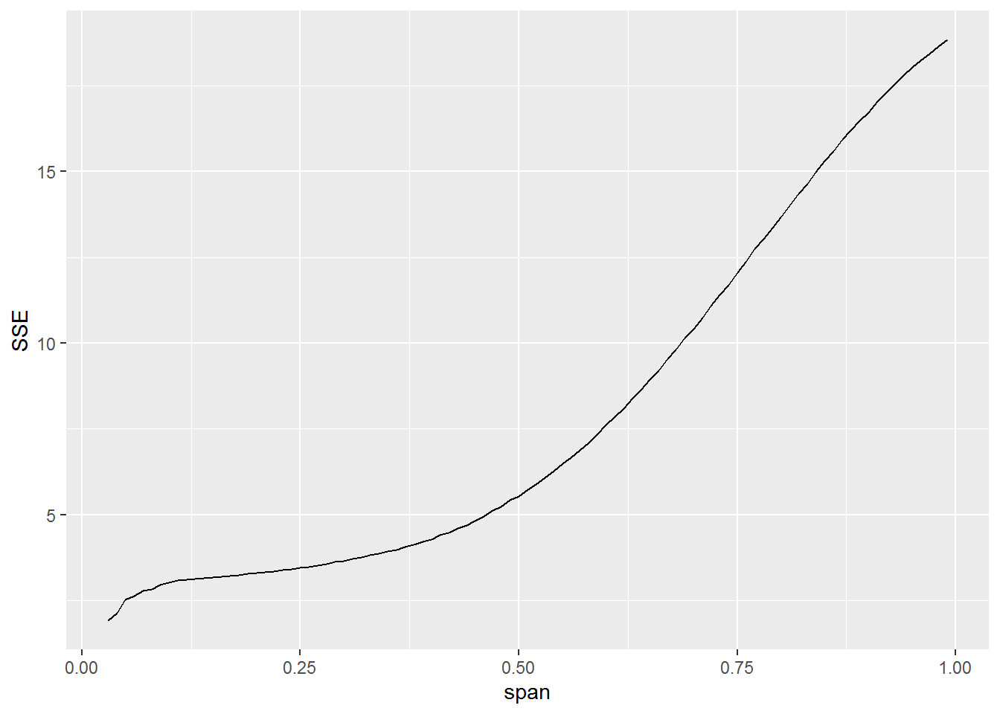
Ahogy vártuk, a hiba folyamatosan csökken, az alulsimított megoldás tűnik a legjobbnak. (Jól látható, hogy az alulsimítás a túlilleszkedés analóg fogalma).
Most vessük be a trükköt: csak a tanítóhalmazra illesztünk, miközben a teszthalmazon mérjük a hibát. Íme az eredmény:
SSEfull <- sapply(spans, function(sp) sum((sapply(which(!SimData$train), function(i)
loessfun(SimData$x[i], SimData$x[SimData$train==TRUE],
SimData$yobs[SimData$train==TRUE], sp, 1))-yobs[SimData$train==FALSE])^2))
ggplot(data.frame(span = spans, SSE = SSEfull), aes(x = span, y = SSE)) + geom_line()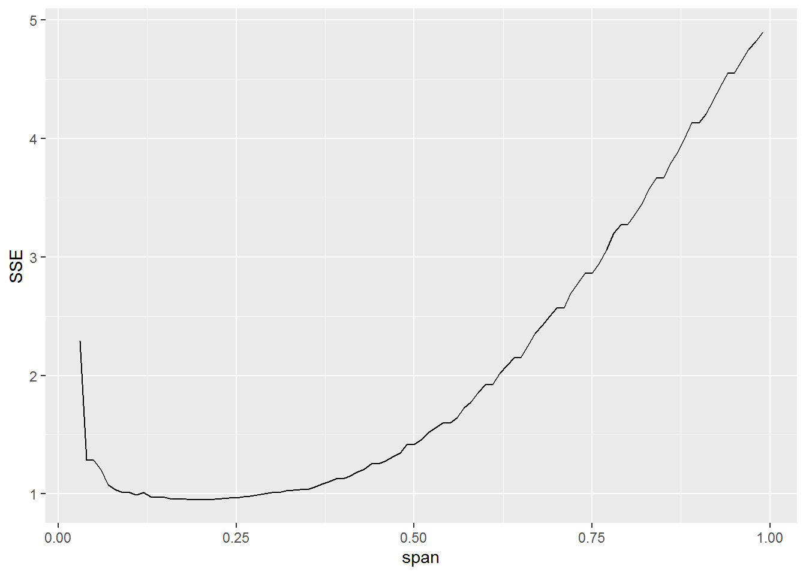
Pontosan a várakozásainknak megfelelően így már szép, értelmes optimum van: mind a túl-, mind az alulsimítást észre tudjuk venni ezzel a validációval.
Az optimális simítási paraméter értéke számszerűen is meghatározható:
## [1] 0.21